| 日付 | 2019年11月4日（月） |
|---|---|
| 山域 | 奥多摩 |
| メンバー | 家族（妻、長女・8歳、長男・6歳） |
| 山行形態 | 子連れ日帰り |
| アクセス | 車 |
| ルート (Map) | 丹波山村村営駐車場 (8:40) - (10:20) 堂所 - (11:15) 七ツ石小屋 - (11:39) 七ツ石山 (12:31) - (13:23) 堂所 - (14:34) 丹波山村村営駐車場 |
3連休の最終日。そこそこ晴れそうなので今週も山に行くことにする。
帰りの高速が混みそうなので、関越と中央道の上野原以西は除外。
そうなると途端に選択肢が少なくなってしまうのが辛いところだ。
ここ2回の山行で、息子はたいして疲れてなさそうだったので、
少しハードルを上げて奥多摩の七ツ石山に登ることにする。
標高差1000mを越えるロングコースだ。
丹波山村村営駐車場に車を停める。標高740m。
事前の下調べでは、とにかく混雑する駐車場とのことだったので、
戦々恐々としながらやって来たが、案外空きがあってすんなり停められた。

きれいなトイレもある。熊出没の案内のイラストが怖い。
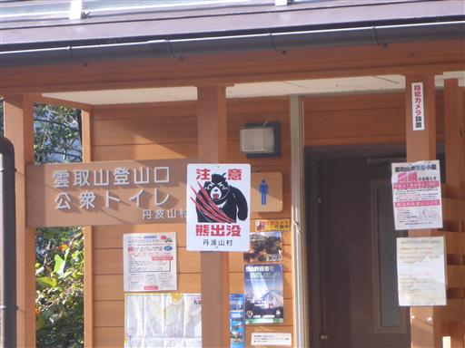
登山口まで少しだけ車道を歩く。
路肩や小さな空きスペースはロープが張られ、あちらこちらに駐車禁止と書かれている。
駐車場に停め損ねたら、諦めて鴨沢に下りるしかなさそうだ。
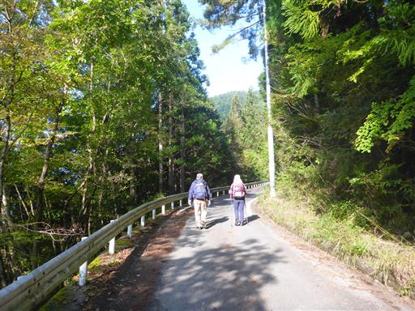
登山口に到着。立派な標識がある。
メインは雲取山で、七ツ石山の存在感は空気だ。
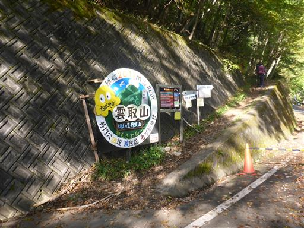
まずは植林地帯の中を登って行く。
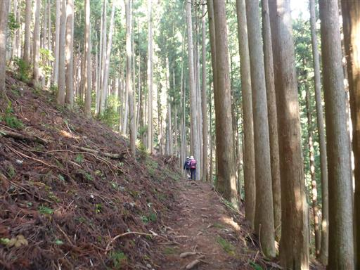
あちらこちらに滑落事故多発の標識が出ている。
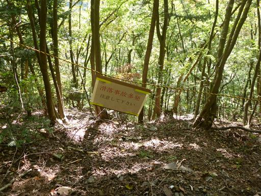
確かに右側はかなりの急斜面で、足を踏み外すと危険だ。

朽ち果てた小屋が建っている。こんな場所に人が住んでいたのだろうか？
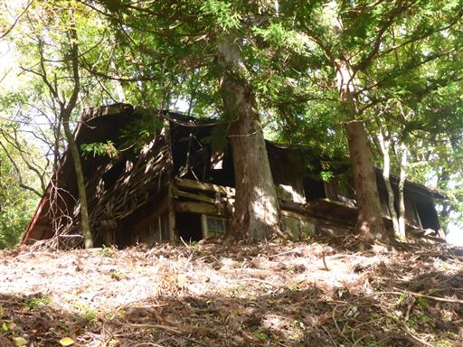
青空も見えるが、雲に覆われているところも多い。
山頂からの景色がどうなるか気がかりだ。
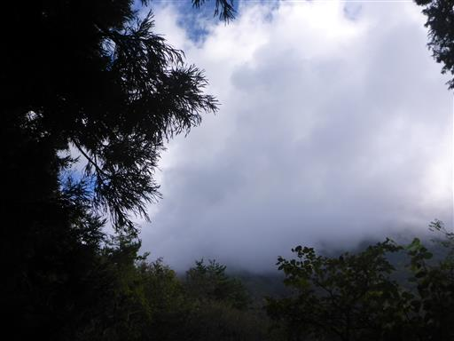
堂所に到着。ここまでは尾根の中腹に付けられた道で
緩い傾斜の変わり映えしない道が延々と続き、退屈で辛かった。
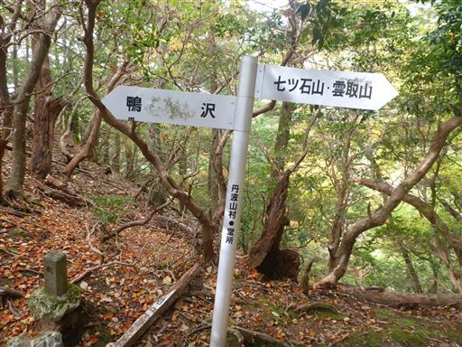
ここからは尾根道になるので、少し登山道に変化が出そうだ。

ところどころで紅葉が見られるようになる。
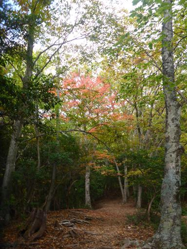
巨大な倒木が道を塞いでいる。太い幹が途中で折れたようだ。
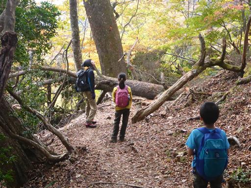
尾根道になっても傾斜はあまり変わらない。
岩場などのアクセントが無く、難易度の高い場所もないため、子供たちはすっかり退屈している。
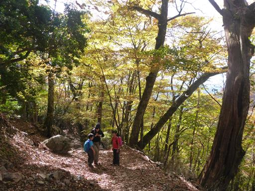
次々と登山者とすれ違う。雲取山で宿泊していた人たちだろう。
そして、次々と登山者に追い抜かれる。今日はペースが上がらない。
短い足の息子にとっては急登の方が得意で、傾斜の緩い道はどうしてもスピードが出ない。
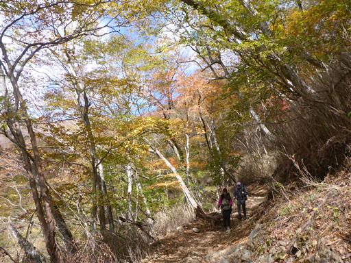
隣の尾根もところどころ色付いている。
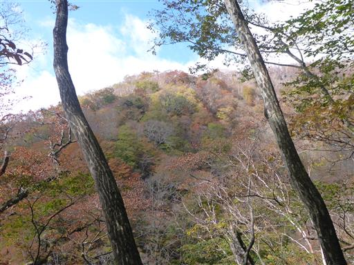
分岐点に到着。左は雲取山へのショートカット道だが、
登山道崩壊で閉鎖されているようだ。
ここは右折して七ツ石山を目指す。
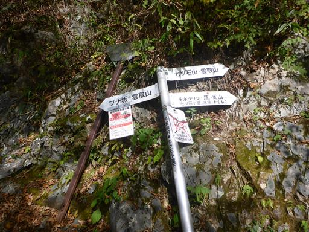
眼下の広葉は色とりどりで美しい。
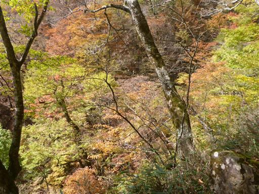
七ツ石小屋に到着。
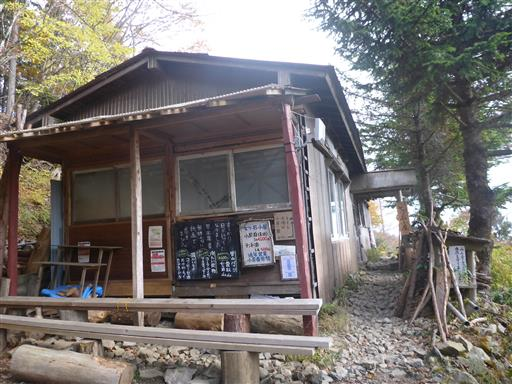
少し先に水場がある。水量は豊富だ。
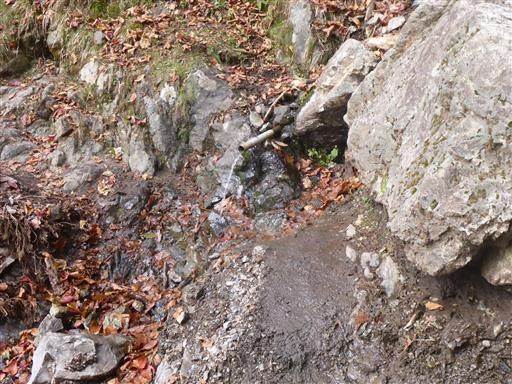
さらに登ると、ついに石尾根に到達する。雲取山から伸びる長い尾根道だ。
山頂まであともう少し。
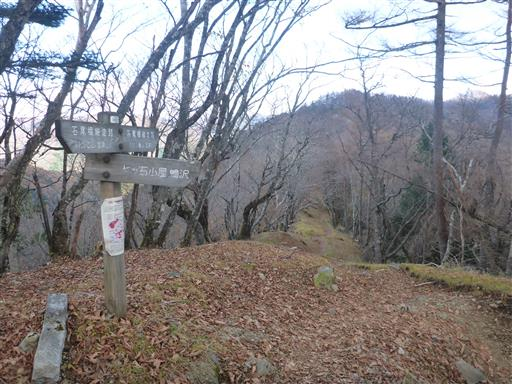
七ツ石神社。大きな岩の下に建てられている。

すぐ近くにある壊れた建物は昔の神社跡なのだろうか？
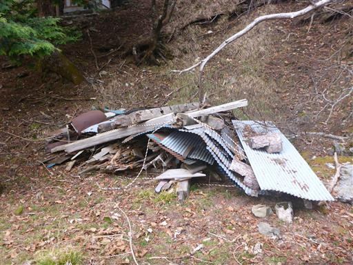
空が広くなり山頂が見えてきた。
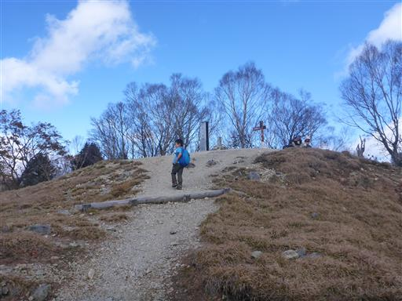
七ツ石山山頂に到着。標高1757m。
2007年に雲取山から鴨沢に下山したが、七ツ石山に立ち寄ったかどうか
記録も記憶も無い。初登頂かもしれない。
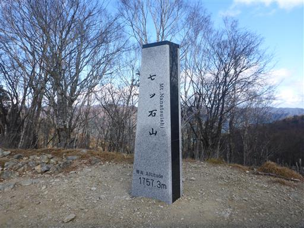
ここは絶好の雲取山の展望台。
いつか登りたいと思っている雲取山は、まだ遠く、そして高い。
でも、あともう少しのところまでたどり着けた。
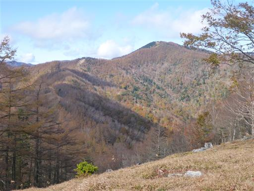
雲取山から左に伸びる尾根は奥秩父主脈縦走路。
左の山は飛竜山だ。
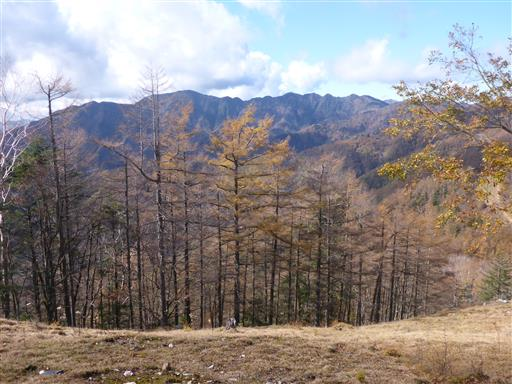
三頭山方面は雲が出ている。
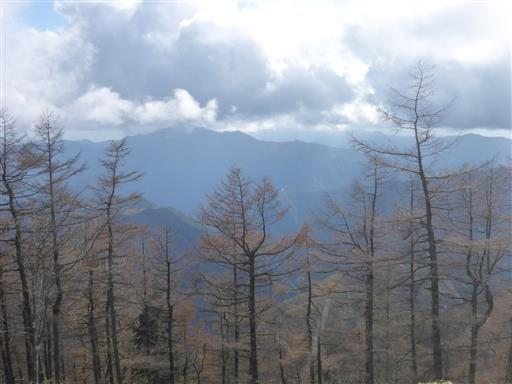
頭上には青空の中、雲がぽっかり浮かんでいる。
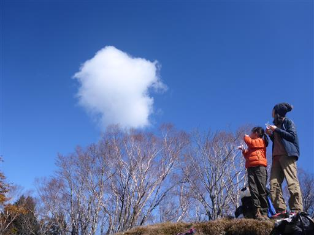
これは、、、カマドウマ？
子供達が必死で捕まえようとしている。
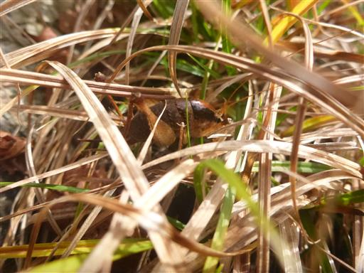
昼食をとったら元来た道を下山する。
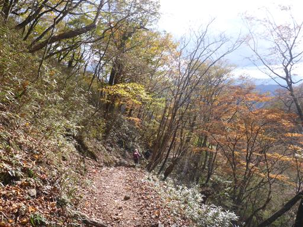
長い道をダラダラと歩き、無事駐車場まで下りてくる。
もう駐車場はガラガラだ。
今回歩いた道は、雲取山に効率的に登れる道ではあるが、
難易度が低く、傾斜が一定で、展望もあまりなく、面白味に欠ける登山道だった。
この長いコースを歩ききれたのは今回の収穫で、今後もう少し登山計画の幅が広がりそうだ。
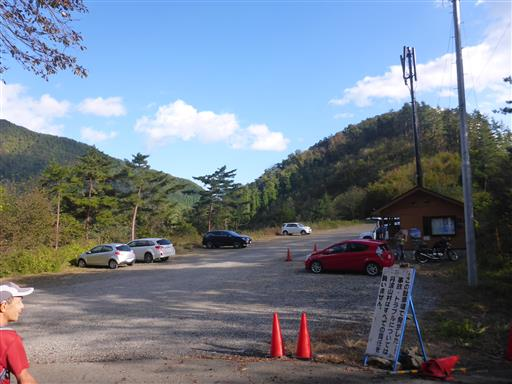